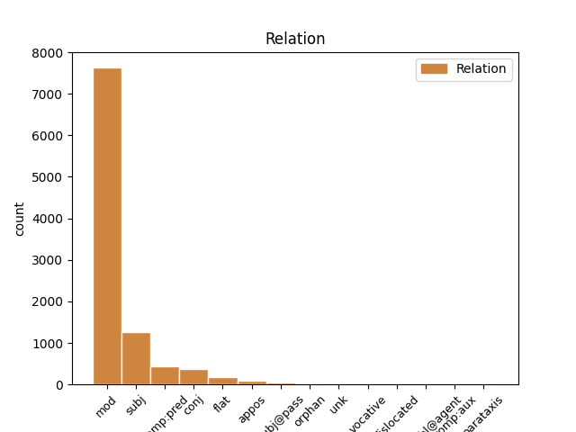
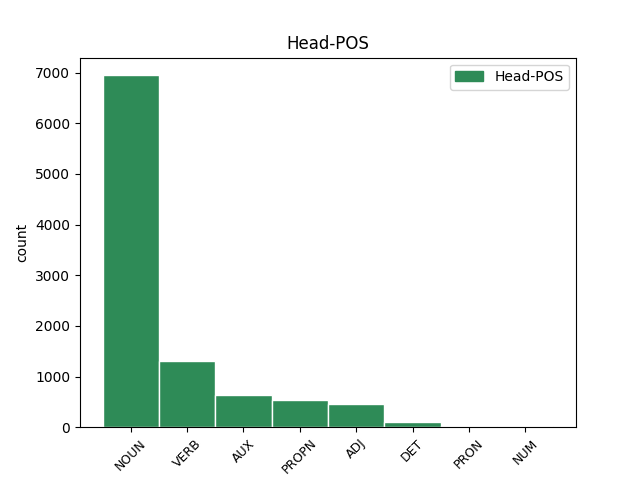
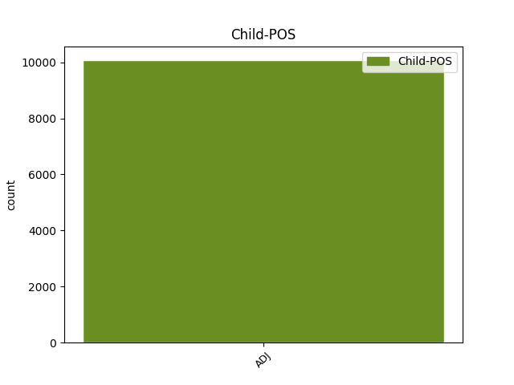

Distribution of features within this leaf



Agreement Rules sorted by frequency.
- When the dependent token is the modifer(mod) of the head token, and the dependent token is ADJ.
1 Здрави _ _ _ _ 0 _ _ _
2 князи _ _ _ _ 0 _ _ _
3 и _ _ _ _ 0 _ _ _
4 дружина _ _ _ _ 0 _ _ _
5 побарая _ _ _ _ 0 _ _ _
6 за _ _ _ _ 0 _ _ _
7 христьяны _ _ _ _ 0 _ _ _
8 на _ _ _ _ 0 _ _ _
9 поганыя поганыи ADJ A- Case=Acc|Degree=Pos|Gender=Masc|Number=Plur|Strength=Weak 10 mod _ ref=217
10 плъки пълкъ NOUN Nb Case=Acc|Gender=Masc|Number=Plur 0 _ _ _
1 Тому _ _ _ _ 0 _ _ _
2 въ _ _ _ _ 0 _ _ _
3 Полотскѣ _ _ _ _ 0 _ _ _
4 позвониша _ _ _ _ 0 _ _ _
5 заутренюю _ _ _ _ 0 _ _ _
6 рано _ _ _ _ 0 _ _ _
7 у _ _ _ _ 0 _ _ _
8 святыя _ _ _ _ 0 _ _ _
9 Софеи _ _ _ _ 0 _ _ _
10 въ _ _ _ _ 0 _ _ _
11 колоколы _ _ _ _ 0 _ _ _
12 а _ _ _ _ 0 _ _ _
13 онъ онъ ADJ Pd Case=Nom|Gender=Masc|Number=Sing 17 subj _ ref=160
14 въ _ _ _ _ 0 _ _ _
15 Кыевѣ _ _ _ _ 0 _ _ _
16 звонъ _ _ _ _ 0 _ _ _
17 слыша слышати VERB V- Aspect=Perf|Mood=Ind|Number=Sing|Person=3|Tense=Past|VerbForm=Fin|Voice=Act 0 _ _ _
1 Свѣтлое _ _ _ _ 0 _ _ _
2 и _ _ _ _ 0 _ _ _
3 тресвѣтлое _ _ _ _ 0 _ _ _
4 слънце _ _ _ _ 0 _ _ _
5 Всѣмъ _ _ _ _ 0 _ _ _
6 тепло теплыи ADJ A- Case=Nom|Degree=Pos|Gender=Neut|Number=Sing|Strength=Strong 9 comp:pred _ ref=182
7 и _ _ _ _ 0 _ _ _
8 красно _ _ _ _ 0 _ _ _
9 еси быти AUX V- Mood=Ind|Number=Sing|Person=2|Tense=Pres|VerbForm=Fin|Voice=Act 0 _ _ _
1 Свѣтлое _ _ _ _ 0 _ _ _
2 и _ _ _ _ 0 _ _ _
3 тресвѣтлое _ _ _ _ 0 _ _ _
4 слънце _ _ _ _ 0 _ _ _
5 Всѣмъ _ _ _ _ 0 _ _ _
6 тепло теплыи ADJ A- Case=Nom|Degree=Pos|Gender=Neut|Number=Sing|Strength=Strong 0 _ _ _
7 и _ _ _ _ 0 _ _ _
8 красно красьныи ADJ A- Case=Nom|Degree=Pos|Gender=Neut|Number=Sing|Strength=Strong 6 conj _ ref=182
9 еси _ _ _ _ 0 _ _ _
1 Уже _ _ _ _ 0 _ _ _
2 бо _ _ _ _ 0 _ _ _
3 братіе _ _ _ _ 0 _ _ _
4 не невеселыи ADJ A- Case=Nom|Degree=Pos|Gender=Fem|Number=Sing|Strength=Weak 0 _ _ _
5 веселая веселая ADJ A- Case=Nom|Degree=Pos|Gender=Fem|Number=Sing|Strength=Weak 4 flat _ ref=75
6 година _ _ _ _ 0 _ _ _
7 въстала _ _ _ _ 0 _ _ _
1 Рекъ _ _ _ _ 0 _ _ _
2 Боянъ _ _ _ _ 0 _ _ _
3 и _ _ _ _ 0 _ _ _
4 ходы _ _ _ _ 0 _ _ _
5 на _ _ _ _ 0 _ _ _
6 Святъславля _ _ _ _ 0 _ _ _
7 пѣстворца _ _ _ _ 0 _ _ _
8 стараго _ _ _ _ 0 _ _ _
9 времени _ _ _ _ 0 _ _ _
10 Ярославля _ _ _ _ 0 _ _ _
11 Ольгова ольговъ ADJ A- Case=Gen|Degree=Pos|Gender=Masc|Number=Sing|Strength=Strong 0 _ _ _
12 коганя кагань ADJ A- Case=Gen|Degree=Pos|Gender=Masc|Number=Sing|Strength=Strong 11 appos _ ref=209
13 хоти _ _ _ _ 0 _ _ _
1 притрепа _ _ _ _ 0 _ _ _
2 славу _ _ _ _ 0 _ _ _
3 дѣду _ _ _ _ 0 _ _ _
4 своему _ _ _ _ 0 _ _ _
5 Всеславу _ _ _ _ 0 _ _ _
6 а _ _ _ _ 0 _ _ _
7 самъ самъ ADJ Pd Case=Nom|Gender=Masc|Number=Sing 14 subj@pass _ ref=144
8 подъ _ _ _ _ 0 _ _ _
9 чрълеными _ _ _ _ 0 _ _ _
10 щиты _ _ _ _ 0 _ _ _
11 на _ _ _ _ 0 _ _ _
12 кровавѣ _ _ _ _ 0 _ _ _
13 травѣ _ _ _ _ 0 _ _ _
14 притрепанъ притрепати VERB V- Case=Nom|Gender=Masc|Number=Sing|Strength=Strong|Tense=Past|VerbForm=Part|Voice=Pass 0 _ _ _
15 литовскыми _ _ _ _ 0 _ _ _
16 мечи _ _ _ _ 0 _ _ _
1 сего _ _ _ _ 0 _ _ _
2 бо _ _ _ _ 0 _ _ _
3 нынѣ _ _ _ _ 0 _ _ _
4 сташа _ _ _ _ 0 _ _ _
5 стязи _ _ _ _ 0 _ _ _
6 Рюриковы _ _ _ _ 0 _ _ _
7 а _ _ _ _ 0 _ _ _
8 друзіи другыи ADJ A- Case=Nom|Degree=Pos|Gender=Masc|Number=Plur|Strength=Weak 0 _ _ _
9 Давыдовы давыдовъ ADJ A- Case=Nom|Degree=Pos|Gender=Masc|Number=Plur|Strength=Strong 8 orphan _ ref=166
1 сего сии ADJ Pd Case=Gen|Gender=Masc|Number=Sing 5 unk _ ref=94
2 же _ _ _ _ 0 _ _ _
3 инъ _ _ _ _ 0 _ _ _
4 никътоже _ _ _ _ 0 _ _ _
5 видѣ видѣти VERB V- Aspect=Perf|Mood=Ind|Number=Sing|Person=3|Tense=Past|VerbForm=Fin|Voice=Act 0 _ _ _
6 нъ _ _ _ _ 0 _ _ _
7 тъкъмо _ _ _ _ 0 _ _ _
8 кнѧзь _ _ _ _ 0 _ _ _
9 ѥдинъ _ _ _ _ 0 _ _ _
1 безѹмьне безумьныи ADJ A- Case=Voc|Degree=Pos|Gender=Masc|Number=Sing|Strength=Strong 7 vocative _ ref=29
2 въ _ _ _ _ 0 _ _ _
3 сию _ _ _ _ 0 _ _ _
4 нощь _ _ _ _ 0 _ _ _
5 дш҃ю _ _ _ _ 0 _ _ _
6 твою _ _ _ _ 0 _ _ _
7 изьмѹ изъяти VERB V- Mood=Ind|Number=Sing|Person=1|Tense=Pres|VerbForm=Fin|Voice=Act 0 _ _ _
8 а _ _ _ _ 0 _ _ _
9 ꙗже _ _ _ _ 0 _ _ _
10 събьра _ _ _ _ 0 _ _ _
11 комѹ _ _ _ _ 0 _ _ _
12 бѹдѹть _ _ _ _ 0 _ _ _
1 а _ _ _ _ 0 _ _ _
2 мтр҃и _ _ _ _ 0 _ _ _
3 котѡрыи _ _ _ _ 0 _ _ _
4 сн҃ъ _ _ _ _ 0 _ _ _
5 добръ добрыи ADJ A- Case=Nom|Degree=Pos|Gender=Masc|Number=Sing|Strength=Strong 12 dislocated _ ref=106
6 перваго _ _ _ _ 0 _ _ _
7 ли _ _ _ _ 0 _ _ _
8 другагѡ _ _ _ _ 0 _ _ _
9 ли _ _ _ _ 0 _ _ _
10 тому _ _ _ _ 0 _ _ _
11 же _ _ _ _ 0 _ _ _
12 дасть дати VERB V- Mood=Ind|Number=Sing|Person=3|Tense=Pres|VerbForm=Fin|Voice=Act 0 _ _ _
13 своѥ _ _ _ _ 0 _ _ _
1 Братіе _ _ _ _ 0 _ _ _
2 и _ _ _ _ 0 _ _ _
3 дружино _ _ _ _ 0 _ _ _
4 Луце лучии ADJ A- Case=Nom|Degree=Cmp|Gender=Neut|Number=Sing|Strength=Strong 6 comp:aux _ ref=10
5 жъ _ _ _ _ 0 _ _ _
6 бы быти AUX V- Aspect=Perf|Mood=Ind|Number=Sing|Person=3|Tense=Past|VerbForm=Fin|Voice=Act 0 _ _ _
7 потяту _ _ _ _ 0 _ _ _
8 быти _ _ _ _ 0 _ _ _
9 неже _ _ _ _ 0 _ _ _
10 полонену _ _ _ _ 0 _ _ _
11 быти _ _ _ _ 0 _ _ _
1 чюнеръ _ _ _ _ 0 _ _ _
2 же _ _ _ _ 0 _ _ _
3 град _ _ _ _ 0 _ _ _
4 есть _ _ _ _ 0 _ _ _
5 на _ _ _ _ 0 _ _ _
6 ѡстровꙋ _ _ _ _ 0 _ _ _
7 на _ _ _ _ 0 _ _ _
8 каменомъ _ _ _ _ 0 _ _ _
9 не _ _ _ _ 0 _ _ _
10 дѣланъ дѣлати VERB V- Case=Nom|Gender=Masc|Number=Sing|Strength=Strong|Tense=Past|VerbForm=Part|Voice=Pass 0 _ _ _
11 ничим ничьто ADJ Px Case=Ins|Gender=Neut|Number=Sing 10 comp:obl@agent _ ref=7
12 бг҃мь _ _ _ _ 0 _ _ _
13 сътворенъ _ _ _ _ 0 _ _ _
Disagree Examples:
1 поидохъ _ _ _ _ 0 _ _ _
2 ѿ _ _ _ _ 0 _ _ _
3 ст҃го _ _ _ _ 0 _ _ _
4 сп҃са _ _ _ _ 0 _ _ _
5 златоверхаго _ _ _ _ 0 _ _ _
6 съ _ _ _ _ 0 _ _ _
7 его _ _ _ _ 0 _ _ _
8 млстью _ _ _ _ 0 _ _ _
9 ѿ _ _ _ _ 0 _ _ _
10 великого _ _ _ _ 0 _ _ _
11 кн҃ѧзѧ _ _ _ _ 0 _ _ _
12 михаила _ _ _ _ 0 _ _ _
13 борисовичѧ _ _ _ _ 0 _ _ _
14 и _ _ _ _ 0 _ _ _
15 ѿ _ _ _ _ 0 _ _ _
16 влдкы владыка NOUN Nb Case=Gen|Gender=Masc|Number=Sing 0 _ _ _
17 генадїѧ _ _ _ _ 0 _ _ _
18 твѣрьскых твѣрьскыи ADJ A- Case=Gen|Degree=Pos|Gender=Masc|Number=Plur|Strength=Weak 16 mod _ ref=2
1 и _ _ _ _ 0 _ _ _
2 жерепца _ _ _ _ 0 _ _ _
3 дам _ _ _ _ 0 _ _ _
4 да _ _ _ _ 0 _ _ _
5 тысѧчю тысяча NUM Ma Case=Acc|Gender=Fem|Number=Sing 0 _ _ _
6 золотых золотыи ADJ A- Case=Gen|Degree=Pos|Gender=Fem|Number=Plur|Strength=Weak 5 mod _ ref=7
7 дам _ _ _ _ 0 _ _ _
8 а _ _ _ _ 0 _ _ _
9 стань _ _ _ _ 0 _ _ _
10 в _ _ _ _ 0 _ _ _
11 вѣрѹ _ _ _ _ 0 _ _ _
12 нашѹ _ _ _ _ 0 _ _ _
13 в _ _ _ _ 0 _ _ _
14 махмѣт _ _ _ _ 0 _ _ _
15 дени _ _ _ _ 0 _ _ _
1 а _ _ _ _ 0 _ _ _
2 не _ _ _ _ 0 _ _ _
3 станешь _ _ _ _ 0 _ _ _
4 в _ _ _ _ 0 _ _ _
5 вѣрѹ _ _ _ _ 0 _ _ _
6 нашѹ _ _ _ _ 0 _ _ _
7 в _ _ _ _ 0 _ _ _
8 махмет _ _ _ _ 0 _ _ _
9 дени _ _ _ _ 0 _ _ _
10 и _ _ _ _ 0 _ _ _
11 жерепца _ _ _ _ 0 _ _ _
12 возмꙋ _ _ _ _ 0 _ _ _
13 и _ _ _ _ 0 _ _ _
14 тысѧчю тысяча NUM Ma Case=Acc|Gender=Fem|Number=Sing 0 _ _ _
15 золотых золотыи ADJ A- Case=Gen|Degree=Pos|Gender=Fem|Number=Plur|Strength=Weak 14 mod _ ref=7
16 на _ _ _ _ 0 _ _ _
17 главѣ _ _ _ _ 0 _ _ _
18 твоеи _ _ _ _ 0 _ _ _
19 возмѹ _ _ _ _ 0 _ _ _
1 ино _ _ _ _ 0 _ _ _
2 братьѧ братия NOUN Nb Case=Nom|Gender=Fem|Number=Sing 0 _ _ _
3 рѹсьстїи русьскыи ADJ A- Case=Nom|Degree=Pos|Gender=Masc|Number=Plur|Strength=Weak 2 mod _ ref=7
4 хрстиѧне _ _ _ _ 0 _ _ _
5 кто _ _ _ _ 0 _ _ _
6 хочеть _ _ _ _ 0 _ _ _
7 поити _ _ _ _ 0 _ _ _
8 в _ _ _ _ 0 _ _ _
9 ындѣискѹю _ _ _ _ 0 _ _ _
10 землю _ _ _ _ 0 _ _ _
11 и _ _ _ _ 0 _ _ _
12 ты _ _ _ _ 0 _ _ _
13 ѡстави _ _ _ _ 0 _ _ _
14 вѣрѹ _ _ _ _ 0 _ _ _
15 свою _ _ _ _ 0 _ _ _
16 на _ _ _ _ 0 _ _ _
17 рѹси _ _ _ _ 0 _ _ _
1 и _ _ _ _ 0 _ _ _
2 ѡни онъ ADJ Pd Case=Nom|Gender=Masc|Number=Plur 3 subj _ ref=9
3 пришедъ приити VERB V- Case=Nom|Gender=Masc|Number=Sing|Strength=Strong|Tense=Past|VerbForm=Part|Voice=Act 0 _ _ _
4 на _ _ _ _ 0 _ _ _
5 град _ _ _ _ 0 _ _ _
6 и _ _ _ _ 0 _ _ _
7 дворы _ _ _ _ 0 _ _ _
8 разволѧють _ _ _ _ 0 _ _ _